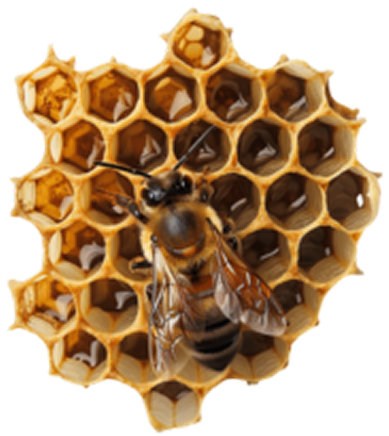
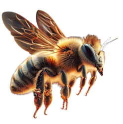

Hierarquia
No campo zoológico da etologia,uma hierarquia de dominância (anteriormente e coloquialmente chamada de hierarquia hierárquica )
é um tipo de hierarquia social que surge quando membros de grupos sociais de animais interagem, criando um sistema de classificação.


Em vez de lutar cada vez que se encontram, os indivíduos do mesmo sexo estabelecem uma classificação relativa, com indivíduos de
classificação mais alta frequentemente ganhando mais acesso a recursos e parceiros. Com base em interações repetitivas, uma ordem
social é criada que está sujeita a mudanças cada vez que um animal dominante é desafiado por um subordinado.
Para muitas sociedades animais, a posição de um indivíduo na hierarquia de dominância corresponde às suas oportunidades de reprodução.
Em animais hierarquicamente sociais, os indivíduos dominantes podem exercer controle sobre os outros.
Por exemplo, em um rebanho de cabras selvagens, é um macho grande que é dominante e mantém a disciplina e a coerência do rebanho.
Ele lidera o grupo,
mas compartilha a liderança em uma expedição de forrageamento com uma cabra madura que normalmente sobreviverá a uma sucessão de machos dominantes.
No entanto, trabalhos anteriores mostraram que as ordens de liderança em cabras não estavam relacionadas à idade ou dominância.